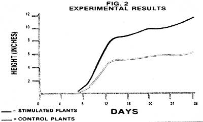
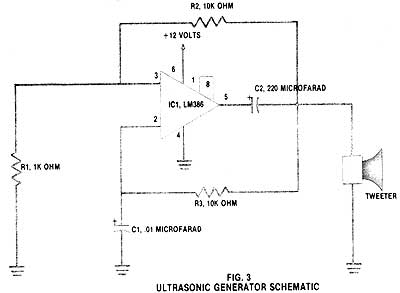

Though it's best known as a pest-control method, high-frequency sound could soon be used for . . .
In an effort to keep you informed about the latest developments in the scientific and electronic worlds, I regularly devote time to reporting current (as well as, occasionally, forgotten) technology. Two issues ago-in MOTHER NO. 85-I discussed some experiments in which photovoltaic cells were used to stimulate the roots of plants, resulting in a significant increase in their rate of growth.
And, as it happens, I recently found yet another intriguing report... one which claims that a plant's growth can be speeded up by subjecting the greenery to ultrasound. "Now this," I thought, "is a new twist."
ULTRASONICS
Judging by your overwhelming response to the article on photovoltaic root stimulation, I'm sure that many of you will be anxious to give this new technique a try. Once again, though, let's start by discussing the principles behind this exciting development.
Sound is vibration that travels through air. Without those molecules of nitrogen, oxygen, carbon dioxide, etc., there would be no sound: A telephone ringing in outer space would go unanswered even if an astronaut happened to be floating by, because no one could hear it. Sound vibrations come in a wide range of frequencies. The audio range-which extends up to about 20,000 vibrations per second (cycles per second or CPS)-includes those frequencies that people can hear. Of course, some individuals do hear better than others. Women, in particular, can usually detect noises that are of too high a frequency for men to hear. And most animals exhibit hearing capabilities superior to those of humans. Many insects, for example, can produce and hear frequencies that are beyond our limitations.
When the frequency of a sound extends beyond our normal hearing limit, we have ultrasound. Fig. 1 illustrates the sound frequency range from 0 to 50,000 CPS and shows the hearing capabilities of humans and several animals.
ACCELERATED PLANT GROWTH
The possibility that plants might respond to sound waves was explored to some extent more than a century ago. Charles Darwin, the famous evolutionary theorist, was convinced that sound could benefit plant growth. He even attempted-without success-to stimulate plant growth with notes from the bassoon and other musical instruments. Similar tests were performed by the eminent German plant physiologist Wilhelm Pfeffer, with the same negative results.
Early experiments were largely confined to using frequencies in the audio range, and most of those tests were done with frequencies so low that they could actually be felt by humans. It wasn't until the development of electronic oscillators that scientists were able to experiment with ultrasonic plant growth acceleration. The better-equipped researchers discovered that the effect only becomes noticeable at frequencies higher than 20,000 CPS and that the benefit continues to increase up to about 50,000 CPS.
ACTUAL RESULTS
The report I ran across discussed the effects of bathing radishes in ultrasound. One flat of seeds was placed in an environmentally controlled chamber with 50,000 CPS ultrasound piped in at an output of about one watt; the second group (called a control) was set in an identical chamber but did not receive exposure to ultrasound. Artificial lighting was switched on in both chambers for 12 hours each day (during which time the experimental flat received ultrasound). Both groups were watered and cared for equally.
After about seven days, the seeds in both trays began to sprout. One week is just about the normal germination period for radishes, so up to that point in the experiment, ultrasound didn't seem to offer any benefit.
It soon became apparent, though, that the seedlings receiving ultrasound treatment were growing much more rapidly than their control counterparts. In fact, by the fourteenth day the experimental plants were half again as tall as the ones in the "quiet" chamber.
The experiment continued for 28 days, the same period of time used in the photovoltaic root stimulation tests. By the end of the test, the plants treated with ultrasonic vibrations had grown an average of 87% taller than their control cousins. (The actual growth rates are shown in graphic form in Fig. 2.) Repetitions of the experiment were run to confirm the initial results, and some of the later tests showed growth rate increases of as much as 150%!
It isn't exactly clear why ultrasound stimulates plant growth. Evidence seems to support the theory that the sound acts as a catalyst, activating the production of plant hormones called auxins. As was the case with photovoltaic root stimulation, however, concrete explanations will have to wait for further research.
LET'S GIVE IT A TRY
Since seeing is believing, you'll probably want to stage your own experiment. This test will be a little more involved than the one we used for photovoltaic stimulation, but it's still not difficult to perform.
Your first (and main) problem will be obtaining an ultrasonic generator of suitable quality. Commercial generators are too expensive for most of us to buy simply to satisfy our curiosity, but you might be able to use one owned by a high school or college. Also, most TV repair shops keep an ultrasound generator on hand, even though they rarely need it. (If you try to strike a deal to borrow or rent a generator from one of these sources, be sure that the unit has an output of at least one-half watt.)
And there's yet another possible source of high-frequency sound. Have you seen advertisements for rodent-repelling machines? Such devices are simply frequency generators that supposedly scare away the varmints by flooding a room with high-intensity ultrasound. These devices could be just the ticket . . . except that they, too, are pretty pricey. Better ones cost up to $100, and the $20 models probably won't work for our purposes. If you already own a good-quality "rat ridder", though, it will serve well for your experiment.
If none of the above possibilities bear fruit, you can build your own ultrasonic generator. It's not a difficult electronics project, and the device can be assembled for under $20 from parts available at a local Radio Shack store. The schematic (Fig. 3) shows the layout; the only other thing you'll need is a 12-volt power supply. Either a battery eliminator or a car battery will work.
There's some evidence that higher frequencies stimulate greater growth, so you might experiment with your homemade generator by changing the value of the capacitor listed as C1. If you substitute a capacitor smaller than the one shown, the frequency will increase. Also, don't be tempted to use a conventional speaker instead of the tweeter called for in the design. Normal speakers aren't capable of reproducing the high frequencies that we're looking for.
For your experiment to have any validity, the two groups of plants you use will have to be well separated from each other. The ultrasonic generator will fill an entire room with the high-pitched squeal, but walls and doors will block quite a bit of the noise. Still, distance provides the best assurance that your control group isn't benefiting from the ultrasonic stimulation.
During the course of your experiment, you might find it interesting to change the timing cycle from that used in the original research. Unlike photovoltaic stimulation, ultrasound also benefits plants that are in bright sunlight. Tests have even shown that, with ultrasonic treatment, plants will grow in the dark!
ANOTHER CATCH
As your experiment progresses, you'll discover that ultrasonically stimulated plants show some side effects. Though treated plants do grow taller, they seem to do so at the expense of fullness of foliage. The control plants will be robust but short, while the experimental group will be tall, spindly, and darkly pigmented. Apparently, the stimulated plants aren't able to absorb nutrients fast enough to keep up with their accelerated growth rate.
Once the sound is removed, however, the plants will produce normal foliage. And if your results are similar to the ones I've investigated, the experimental plants will remain larger than their normal counterparts.
What is the answer to conquering this apparent problem of plant starvation? I don't know . . . but maybe some clever research by one of MOTHER's readers will turn up some clues. I wonder what would happen if you combined photovoltaic root stimulation with ultrasound.
The Effects of Ultrasound
Unfortunately, ultrasound isn't without side effects. Though there is no strong evidence that the high-frequency waves are damaging to humans, scientists are exercising some caution about its widespread use. Also, though the frequency used for plant stimulation is well above the limit of human hearing, some animals can perceive it and may be hurt.
For rabbits, mice, gerbils, and monkeys, continued exposure to this sort of sound can cause lackluster appetite, loss of weight, and (in extreme cases) even death. If you have pets, you should keep in mind that ultrasound is earsplitting to those creatures that can hear it.
|
 The results of one experi ment showed a dramatic increase in growth rate with ultrasound stimulation. |
 The wiring diagram should help you to build a simple and inexpensive ultrasound ultrasound. |
|